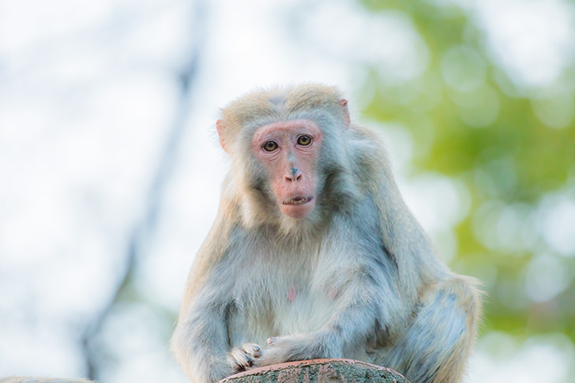

| ニホンザルとは |
体長はオスが53～60センチメートル、メスが47～55センチメートルあります。
体毛は寒冷地では長く、温暖地では短く薄い傾向があります。
顔や尻は裸出し、赤くなっています。幼獣は体毛が密に被われていますが、成長に伴い密度は低くなります。 |
| アンサー① |
哺乳類綱（ 霊長 ）目オナガザル科マカク属に分類される動物です。 |
|
|
ヒトを除いた霊長目の現生種では、最も北（下北半島）まで分布しています。
青森県の下北半島に生息するニホンザル（ホンドザル）を「北限のサル」といいます。
|
| アンサー② |
日本の本州、四国、九州などに分布していますが、（ 茨城 ）県では絶滅しています。 |
|
|
屋久島や種子島にも生息しています。東北地方や中部地方山岳部の個体群は、西日本の個体群よりも大型です。
|
| アンサー③ |
主に（ 果実 ）を食べますが、カエルやトカゲを食べた例もあります。 |
|
|
京都府の嵐山では、192種の食物を食べていたという報告例もあります。
下北半島の個体群は、食物が少ない時期に樹皮、海藻、貝類などを食べることもあります。
|
| アンサー④ |
メスの妊娠期間は161 ~186日で、出産間隔は（ 2~3 ）年です。 |
|
|
春季から夏季に1回に1～2頭の幼獣を産みます。寿命は30年ほどですが、生後26年で出産した例もあるそうです。
|
| アンサー⑤ |
麦を洗って食べるなどの行為が（ 模倣 ）による伝搬なのかどうか慎重に検討されています。 |
|
|
比較的若い個体が行い、成長しその個体と血縁関係がある個体を中心に同様の行動を行う傾向があります。
|
| アンサー⑥ |
群れの個体はすべての個体間で（ 力の強弱 ）による順位が決まっています。 |
|
|
群れ内に「ボス」や「決まった順位」があるとされていましたが、研究によると
人間による餌付けという餌の独り占めが現れやすい特殊な状態下であるから、という見解がされている。
|